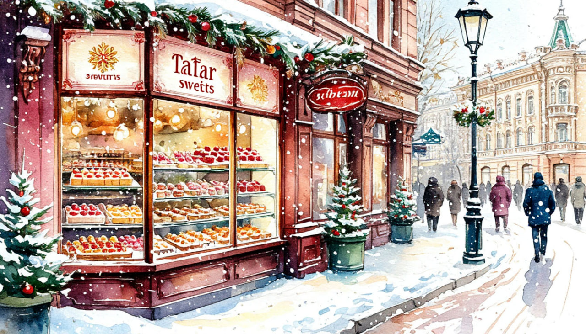

Большое путешествие по Казани

Даты тура: со 2 января 2026г(пт) по 6 января 2026 года (вт)
Стоимость тура:
- 24 900 р. - взрослый
- 24 800 р. - пенсионеры/школьники
- 31 600 р./чел - одноместное размещение
По программе:
- - Обзорная экскурсия «Новогодняя палитра Казани»
- - Экскурсия по территории Кремля, мечеть Кул-Шариф
- - Экскурсия в Национальный музей республики Татарстан
- - Мастер-класс по Чак-Чаку
- - Национальный обед
- - Храм всех религий
- - Экскурсия в "Арыш Мае"
- - Экскурсия в этномузее «ТАТАР АВЫЛЫ» - «В гостях у Татар-бабая»
Программа тура:
1 день:
- 18-00- выезд из Костромы от ТРЦ "РИО" (Ул. Магистральная, 20), правый угол от центрального входа
2 день:
- Прибытие в Казань
- Завтрак в кафе города.
- Автобусно-пешеходная экскурсия «Новогодние краски Казани» по самым красивым местам столицы Татарстана. В ярком новогоднем украшении и морозном запахе хвои, древний город предстанет в самом его сказочном воплощении!
- В ходе экскурсии вы посетите:
- - Богородицкий монастырь, где хранится чудотворная икона Казанской Божией Матери;
- - Петропавловский собор – ценнейший архитектурный памятник и один из духовных символов Казани;
- - Смотровую площадку Казанского Кремля, с которой открываются фантастически красивые виды на Казань: вид на реку Казанку, Центр семьи «Kazan», Дворец Земледельцев, Кремлёвскую набережную, аквапарк «Ривьера», спортивные объекты, построенные к Универсиаде – 2013 и современные постройки;
- Во время экскурсии Вам покажут музейные улицы в дворянском квартале, расскажут историю о спасении Санкт-Петербурга от грызунов Котами Казанскими, о символе города Змее-драконе Зиланте, белом Барсе, узнаете кто такие были Сироты Казанские, откуда появился Татарский Чай и что происходило на Черном Озере
- Посетите татарскую деревню «Туган Авылым» В самом центре Казани расположен известный развлекательный комплекс с древнетатарским названием «Туган авылым», что в переводе означает «Родная деревня». Это настоящая татарская деревня, созданная среди городских высоток.
- Узнаете о жизни и быте татар, увидите старейшую каменную мечеть города Аль-Марджани, построенную с разрешения императрицы Екатерины Второй, татарский театр Галиаскара Камала, таинственное озеро Кабан, хранящее на дне все сокровища Казанских ханов, прогуляетесь по пешеходной улице Каюма Насыри и сохранившимся усадьбам 19 века.
- Экскурсия в Казанский кремль
- Экскурсия в Мечеть Кул Шариф.
- Далее нас ждет Спасская башня, возведенная Постником Яковлевым и Иваном Ширяем, строителями Собора Василия Блаженного.
- Осмотр Президентского Дворца (внешний)
- Обед в кафе города.
- Заселение в отель. Свободное время
- 19-00 (ориентировочно) Для желающих вечерняя экскурсия «Огни ночной Казани».
- При покупке в офисе: 1100 руб/чел. При покупке на месте: 1300 руб./чел.
- С наступлением темноты древняя столица превращается в город из сказок «Тысячи и одной ночи», а его здания и набережные сверкают как изумруды в море миллионов огней. Улицы с тысячелетней историей предстанут перед вами в новом свете. Во время путешествия в сказку вы увидите красивейшие уголки ночного города: Старо-Татарскую слободу в отражении вод озера Кабан, волшебный замок театра кукол, Дворец Земледельцев с гигантским бронзовым деревом и россыпи огней Кремлевской набережной. Окончание экскурсионной программы.
3 день:
- Завтрак в отеле
- Экскурсия в Национальный музей республики Татарстан.
- Вы увидите раритеты с мировой ценностью: подлинную рукопись Казанского ханства — ярлык хана Сахиб-Гирея 1523 г., Ефремово Евангелие 1606 г., которым венчали на царство первого Романова, карету Екатерины II, вещи «с секретом», сделанные по заказу Гавриила Державина, трактор «Фордзон-Путиловец», самолет ПО-2 (У-2) и многое другое.
- Залы музея расскажут о природных богатствах края, ставших основой для жизни и развития древнего населения, о древней и средневековой истории Татарстана, о Казанском крае в XVI–XVIII вв. и Казанской губернии в XIX — начале XX в., об истории республики в советский и современный периоды.
- Пешеходная экскурсия по Казанскому Арбату - улице Баумана. Покупка сувениров
- Центр города — улица Баумана – главная артерия города, красивейшее место, гордость Казани, где можно в полной мере ощутить многообразие города. Вы увидите весьма неожиданные достопримечательности - памятник Коту Казанскому, Богоявленская колокольня, копия кареты Екатерины Второй, арабские часы, памятник Федору Шаляпину и многое другое
- Обед в кафе города с мастер - классом . Приглашаем на кулинарный мастер-класс по изготовлению татарского десерта - чак-чака! Вы научитесь приготовлению этого восточного лакомства.
- Экскурсия в "Арыш Мае" - это магазин -музей, в котором вы узнаете о том, как производятся спиртные напитки, какова история их создания, на какую аудиторию они рассчитаны, и, конечно же, о культуре их потребления. На полках музея вы увидите гастрономические бренды Татарстана: вяленый гусь, копченые утки, казылык (колбаса из конины), кумыс и, конечно же, чак-чак и талкыш калеве (татарский десерт) У Вас будет время на покупку сувениров себе и близким.
- Возвращение в отель
- Свободное время
4 день:
- Завтрак в отеле «шведский стол»
- Экскурсия «Зимняя сказка в Раифе»
- В преддверии Рождества Христова Раифский монастырь окрашивается светом ярких огней. Ледовый городок открывает свои двери для прихожан и гостей!
- Переливаются на солнце величественные храмы и скульптурные композиции – чудеса, сотворённые руками мастеров! Доводилось ли Вам увидеть Казанский собор изо льда?
- Встречал ли Вас снежный Архангел Михаил?
- Рождественская сказка готова удивить не только взрослых, но и юных посетителей: детская площадка с ледяной горкой и снежными скульптурами животных и знакомых всем персонажей ожидают скорейшей встречи!
- Экскурсия «Овеянная легендами земля» в Раифский Богородицкий мужской монастырь, расположенный в 30 км. от Казани, в заповедном лесу, на берегу дивной красоты озера. Монастырь основан в 17 веке. Его архитектурный ансамбль — один из самых величественных в среднем Поволжье складывался в течение столетий. Основной святыней монастыря является чудотворный Грузинский образ пресвятой Богородицы (XVII в). На территории монастыря расположен освященный патриархом святой источник.
- Новогодняя экскурсия в этномузее «ТАТАР АВЫЛЫ» - «В гостях у Татар-бабая»
- Вас ждет полное погружение в татарский быт и историю: песни и танцы, игры и конечно же национальный обед.
- Вы сможете вжиться в роль исторического жителя деревни крестьянина или крестьянки, ремесленника, купца. Выбрать себе понравившийся костюм и устроить фотосессию.
- На мастер-классе по приготовлению татарского блюда научитесь готовить кыстыбый.
- Узнаете ответы на вопросы: Почему татары называются татарами? На каких музыкальных инструментах они играли? Какие орудия крестьянского труда и предметы быта использовали? Что можно увидеть только в татарском доме?
- А далее отправляемся на фольклорную программу с играми национального праздника Сабантуй. Будет интересно!
- Обед с традиционными татарскими национальными блюдами
- Остановка у «Храма всех религий» на старом Московском тракте. Комплекс представляет собой необычное архитектурное смешивание разных культур и мировых верований — церкви, мечети, синагоги, пагоды, индуистские храмы, а также верования исчезнувших цивилизаций. Вселенский храм - это не место для богослужений, а музей и архитектурный памятник и символический симбиоз религий, цивилизаций и культур (Внешний осмотр).
- Возвращение домой.
5 день:
Прибытие в Кострому в первой половине дня (ориентировочно)
В стоимость тура входит:
- - проживание в гостинице*
- * отель "Булгар" 2* (Номер реестровой записи: С162024019248)
- - питание: 3 завтрака + 3 обеда
- - услуги гида-экскурсовода
- - экскурсионная программа
- - автобусное обслуживание по программе тура
Дополнительно оплачиваются (по желанию):
- - Экскурсия «Вечерняя Казань» * при покупке в офисе: 1100 р./чел. При покупке на месте: 1300 р./чел.
- Для бронирования необходимы данные паспорта РФ и свидетельства о рождении, если с вами путешествуют дети
- Предоплата – 50% от стоимости тура. Остаток за 30 дней до даты выезда.
- Любой тур можно оформить не выходя из дома. Подробнее: Тут
Стоимость тура не зафиксированы и могут быть изменены в большую или меньшую сторону в зависимости от уровня спроса в любой момент.
Время начала экскурсий и их порядок указано ориентировочно.
Фирма-исполнитель оставляет за собой право замены экскурсий без уменьшения общего объема экскурсионной программы.
По вопросам бронирования обращайтесь: